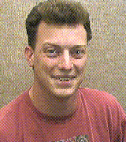
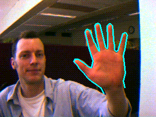
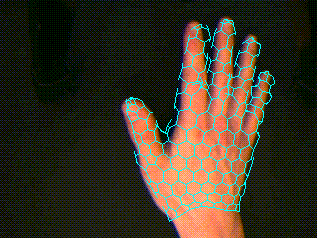
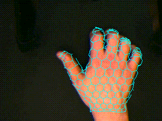

Tony Heap
For a long time there's been a message here saying that this page is
still under construction. I have now reached the point where I've
realised that I'm never going to have time to do a proper job of it,
so instead I'm going to claim that this is the finished version. It's
just not very good, that's all. I figured that you don't really want
to know that I like skiing, I play drums and my favourite colour is
blue, so I've just put the researchy stuff in.
Research - Model-Based Hand Tracking
Overview
I am currently investigating robust, model-based methods for tracking
deformable objects. I am particularly interested in tracking human hands
with a view to recognising gestures. Possible applications are
computer-assisted sign language and human-computer interaction.
I have constructed hand tracking systems based on both 2D and 3D hand
models. The 2D tracker can follow a hand which is held up to the
camera, palm out with all fingers showing. Different gestures can be
performed and recognised. Here's a picture of the tracker in action...

Click here for a video
clip (100Kb MPEG).
Downloadable Hand Tracker Demo
If you have a Silicon Graphics Indy(TM) running Irix 5.3 or later, you
can try the hand tracker out for yourself. Click here for more info.
Work in Collaboration
There has also been some work on gesture analysis by Richard Bowden
which made use of the Leeds Hand
Tracker. Click here for
more details.
3D Hand Tracking
The 3D tracker uses a hand model constructed from a training set of
Magnetic Resonance images (acquired with the kind help of St James'
University Hospital, Leeds) of hands in different positions. A surface
mesh was fitted to each example using physically-based modelling
techniques, and a 3D PDM was built from the meshes. The 3D PDM is used to
track an unmarked hand from a single video camera. A paper detailing
the techniques used is currently under consideration for presentation
at the 2nd International Conference on Face and Gesture Recognition,
to be held in Vermont, New England in October 1996. Here's a snapshot
or two of the 3D tracker in action...


With a view to improving the performance and robustness of my
trackers, I have been looking at ways of modifying the Point Distribution Model
(PDM) to allow for non-linear types of deformation (such as is present
in human hands). I have developed the `Cartesian-Polar Hybrid PDM' which
allows pivotal structures to be modelled directly. I am also working
on another approach to this problem, and if it's successful, I'll tell you
about it.
Publications
Real-Time Hand Tracking and Gesture Recognition using Smart
Snakes,
A. J. Heap,
Proc. Interface to Real and Virtual Worlds,
Montpellier, June 1995 (available as
Olivetti
Research Limited Tech Report 95.1).
Extending the Point Distribution Method Using Polar
Coordinates,
A. J. Heap and D. C. Hogg,
Proc. Computer Analysis of Images and Patterns,
Prague, September 1995 (available as SCS
Tech Report 95.5).
Automated Pivot Location for the Cartesian-Polar Hybrid Point
Distribution Model,
A. J. Heap and D. C. Hogg,
Proc. British Machine Vision Conference,
Birmingham, September 1995 (available as SCS
Tech Report 95.26).
Extending the Point Distribution Method Using Polar
Coordinates (a combination of the above two papers),
A. J. Heap and D. C. Hogg,
Image and Vision Computing Journal, August 1996.
3D Deformable Hand Models,
A. J. Heap and D. C. Hogg,
Gesture Workshop, York, UK, March 1996.
(available as compressed postscript
3dmodels.ps.Z (257K))
Real Time Hand Tracking and Gesture Recognition as a 3D Input
Device for Graphical Applications,
R. Bowden, A. J. Heap and D. C. Hogg,
Gesture Workshop, York, UK, March 1996.
Virtual Datagloves: Interacting with virtual environments through
computer vision,
R. Bowden, A. J. Heap and C. Hart,
Proc. 3rd
UK VR-Sig Conference,
DeMontfort University, Leicester, UK, July 1996
(available as gzipped postscript
vrsig.ps.gz).
Towards 3D Hand Tracking using a Deformable Model,
A. J. Heap and D. C. Hogg,
submitted to 2nd International Face and Gesture Recognition
Conference, Vermont, New England, October 1996.
(available as compressed postscript
3dtracker.ps.Z (456K))
Improving Specificity in PDMs using a Hierarchical Approach,
A. J. Heap and D. C. Hogg,
to appear in Proc. British Machine Vision Conference, Essex, UK, September 1997.
(available as compressed postscript
hierarchical.ps.gz (349K))
Tony Heap - ajh@comp.leeds.ac.uk